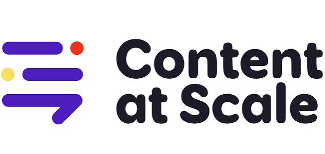

Desenvolvimento
Conceitos fundamentais de Inteligência Artificial
A Inteligência Artificial pode ser compreendida, de maneira geral, como um campo da computação dedicado ao desenvolvimento de sistemas capazes de realizar
tarefas que normalmente exigiriam determinadas capacidades associadas à inteligência humana.
Entre essas capacidades estão o reconhecimento de padrões, a resolução de problemas, a aprendizagem a partir de dados, a compreensão de linguagem e a tomada de decisões.
Embora a ideia de máquinas inteligentes exista há décadas, o desenvolvimento recente da IA foi impulsionado principalmente pelo aumento da capacidade computa-
cional, pela disponibilidade de grandes quantidades de dados e pelo avanço de técnicas de aprendizado de máquina.
O machine learning, ou aprendizado de máquina, permite que sistemas identifiquem padrões em dados e aprimorem seu desempenho sem que todas as regras necessárias para executar uma tarefa precisam ser programadas manualmente.
Outro conceito relevante é o deep learning, ou aprendizado profundo, uma área do aprendizado de máquina baseada principalmente em redes neurais artificiais compostas por múltiplas camadas de processamento. Essa abordagem possibilitou avanços significativos em tarefas como reconhecimento de imagens, processamento de linguagem natural e geração de conteúdo.
Nos últimos anos, ganharam destaque também os chamados modelos de linguagem de grande escala, conhecidos como LLMs (Large Language Models).
Esses sistemas são treinados com grandes volumes de textos e conseguem produzir respostas, resumir informações, auxiliar na escrita, explicar conceitos e realizar outras tarefas relacionadas à linguagem.
Ferramentas de IA generativa, portanto, representam uma mudança importante na relação entre seres humanos e sistemas computacionais, uma vez que não apenas recuperam infor-
mações, mas podem gerar novos conteúdos a partir das instruções fornecidas pelos usuários.
No âmbito educacional, esses conceitos são particularmente relevantes porque permitem desenvolver sistemas capazes de adaptar conteúdos às necessidades individuais,
oferecer explicações alternativas, criar exercícios e auxiliar professores em atividades administrativas e pedagógicas.
Ela se tornou o meio principal para produzir material de ensino, tirando muito do saber que o professor e os elaboradores das apostilas tinham para trazer informações corretas, tiradas de enciclopédias e estudos de diversos cientistas e pesquisadores no geral.
Ética Por Trás do Artificial
O uso da IA para o dia a dia escolar traz algumas dúvidas sobre sua ética, modo certo de usá-la e talvez se é correta tê-lá como uma ferramenta tão próxima,
aqui temos algumas ressalvas sobre o assunto:
- A falta de regulamentações éticas e judiciais claras é algo extremamente necessário para que tenhamos o uso correto dela, outro tópico relacionado é o
plágio que ocorre por conta das IAs com o trabalho de tantos outros pesquisadores que divulgam seus estudos na Internet, também afetando a veracidade do trabalho. - A Datificação das informações dos usuários acontece com todos os dados que lhe são fornecidos, tornando sua privacidade em objeto de estudo e aprimoramento.
- Impacto no Pensamento Criativo, já que ele tira o processo de pensar de forma criativa como procurar pelas fontes de pesquisa e também como formular a apre
sentação de seus achados. - “O Mito da Neutralidade Tecnológica”, uma teoria criada por Andrew Feenberg, um filósofo americano que defende que a Internet é embasada em diversas ideologias
e interesses empresáriais, trazendo sempre uma visão enviesada sobre quaisquer assuntos ditos.
Ferramentas mais comuns
Já explicamos o seu conceito geral, seus problemas éticos, agora nos resta mostrar as tais ferramentas e exemplos nelas:
- Modelos de Chatbot: Estes são os mais comuns de se encontrar, como o Chat GPT, LaMDA e a Alexa.
Ele é usado como um assistente que pode te auxiliar em algumas coisas, como geração de imagens e gráficos para trabalho e estudo. Um Chatbot que mudou
e evoluiu seu conceito original é o Claude. - IA generativa de imagens: Estes, como o nome diz, são específicos para gerar imagens, já que seu banco de dados envolve um inesgotável acervo de ar-
quivos de imagem, alguns exemplos são: Midjourney, DALL-E e Dreamscope. - IAs treinadas para identificação de IA: Esse tipo tem crescido mais ultimamente, com o uso gigantesco de IAs, surgiram programas que identificam as minúcias
de IAs em textos, imagens, gráficos e codificação, como por exemplo: Demonstrador de Saída GPT2, Writer AI Content Detector e o Content at Scale.

